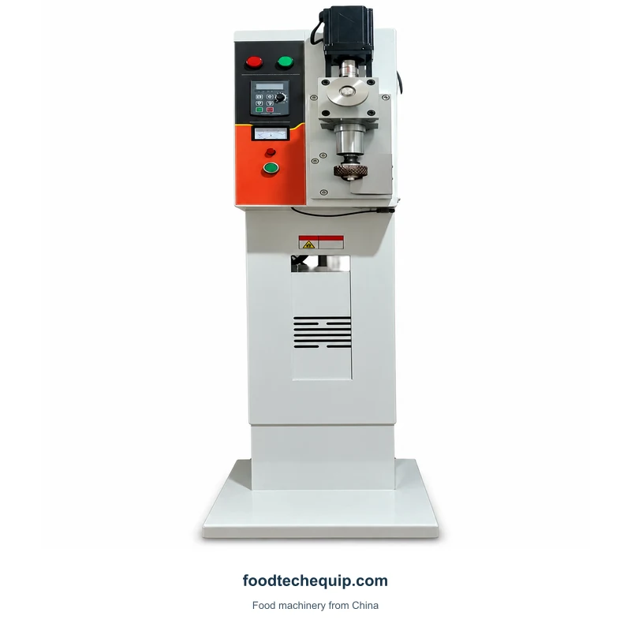

Ultraschallschweißen
Ultraschall-Beutelschweißgerät für Vliesstoff
Ultraschall-Siegelgerät für Vliesstoffbeutelanwendungen.
Maschine ansehenStand-Ultraschall-Siegelgerät für Stoffbeutelanwendungen.
Maschinenauswahl · Hinweise zur Installation · Fernunterstützung
Produktinformationen ansehen ↓Senden Sie eine Stoffprobe und beschreiben Sie die Sacköffnungskonstruktion, die Schichten und die beabsichtigte Verbindung. Diese Details definieren die Dichtungsaufgabe und den erforderlichen Zugang am Arbeitskopf.
Auswählen eines Beutel- oder Tubenversiegelungsprozesses ↗| Parameter | Wert | Einheit |
|---|---|---|
| Leistung | 2 | kW |
| Gewicht | 100 | kg |
| Gesamtabmessungen | 650*500*1320 | mm |
| Verpackungsmaterial | Stoff | — |
| Pakettyp | Taschen | — |
Geben Sie die Materialschichten und die vorgesehene Verbindung an, bevor Sie Arbeitsanordnungen vergleichen. Die Handhabung gefüllter Beutel und das Verschließen des Tubenendes werfen unterschiedliche Zugriffs- und Supportfragen auf, auch wenn der gewünschte Verbindungsprozess ähnlich klingt.

Ultraschall-Siegelgerät für Vliesstoffbeutelanwendungen.
Maschine ansehen
Ein bodenstehender Ultraschall-Beutelverschließer mit Bedienelementen an der Vorderseite und Zugang zum Arbeitskopf.
Maschine ansehen
Ein aufrecht stehender Ultraschall-Beutelverschließer mit Arbeitskopf und kabelgebundener Steuerung.
Maschine ansehen